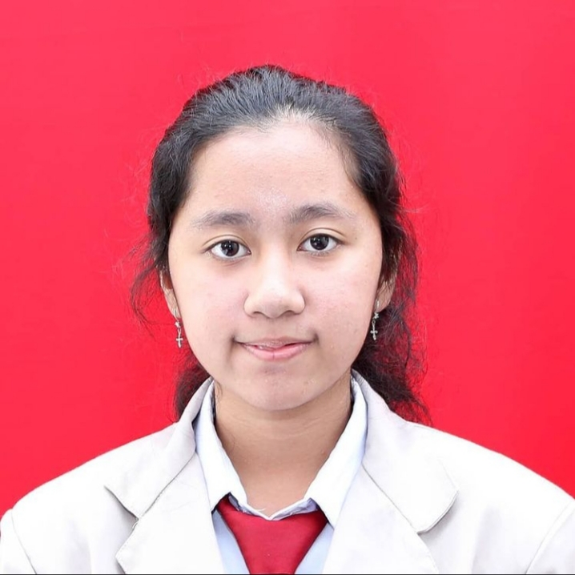

| Nama | Marcella Cecilia Christovani Purnomo |  |
| Tempat, Tanggal Lahir | Bogor, 6 Maret 2004 | |
| Alamat | Jl. Raya Tajur Gang Tanuwijaya RT 02/RW 04 No. 42 | |
| Agama | Kristen | |
| Jenis Kelamin | Perempuan | |
| Asal Sekolah | SMK-SMAK Bogor | |
| Hobi | Mendengarkan lagu dan menonton film |
Selama pandemi Covid-19 ini, saya hanya bisa belajar secara online. Pada minggu pertama belajar di rumah, rasanya sangat bosan. Karena yang biasanya beraktivitas di sekolah, tetapi harus belajar teori dan praktik secara online. Apalagi saat awal pandemi, masih belum terbiasa dengan aplikasi-aplikasi yang menjadi sarana pembelajaran jarak jauh.
Tetapi seiring berjalannya waktu, saya mulai bisa beradaptasi dengan aplikasi-aplikasi tersebut. Pengetahuan tentang teknologi pun bertambah karena adanya pandemi. Walaupun cukup jenuh juga belajar secara online seperti ini, karena belum tentu sepenuhnya memahami materi, terutama untuk praktik. Menurut saya, pembelajaran teori jarak jauh masih bisa dipahami karena diberikan video pembelajaran yang bisa terus diulangi sampai memahami materi tersebut. Sedangkan untuk pembelajaran praktik jarak jauh, guru-guru membuat video pembelajaran untuk praktikum setiap penetapan, sehingga video tersebut bisa diulangi sampai saya memahami cara kerja dalam pembelajaran praktik tersebut. Tetapi hanya menonton video praktik saja masih terasa ada yang kurang, tidak menjamin kita mampu melakukan praktik tersebut secara langsung di laboratorium, karena dalam menggunakan alat-alat di laboratorium memerlukan latihan bagaimana cara memegang alat secara lansung. Setiap 2 minggu sekali dilakukan virtual meeting terkadang sering terjadi kendala jaringan dan kuota internet, tetapi guru-guru pasti memaklumi hal tersebut. Ada banyak suka duka pembelajaran praktik jarak jauh. Tetapi saya bersyukur, akhirnya mulai tanggal 29 Maret 2021 kemarin sudah dilakukan pembelajaran praktik terbatas. Saya sudah melakukan praktikum dan evaluasi langsung di laboratorium.